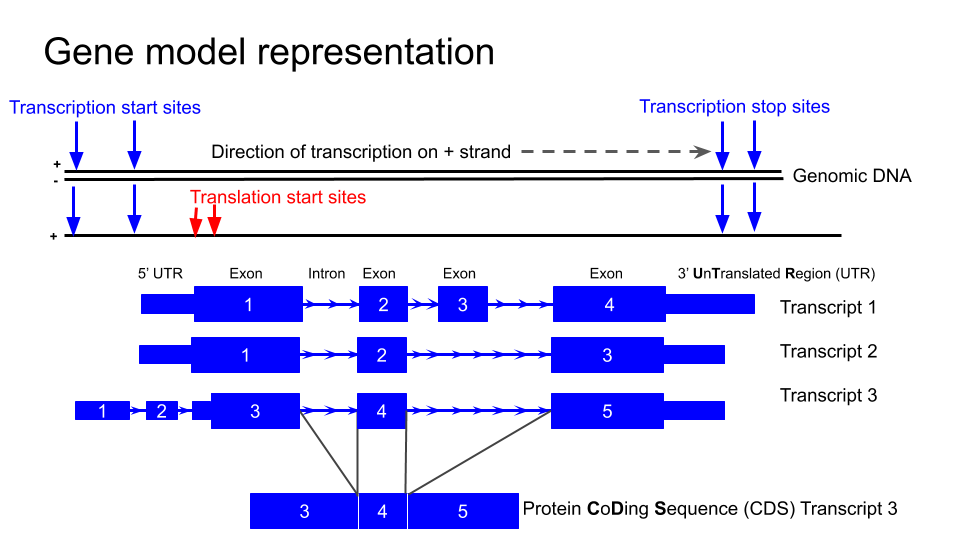
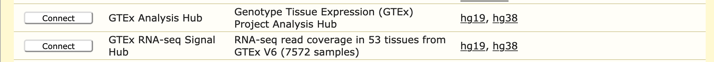
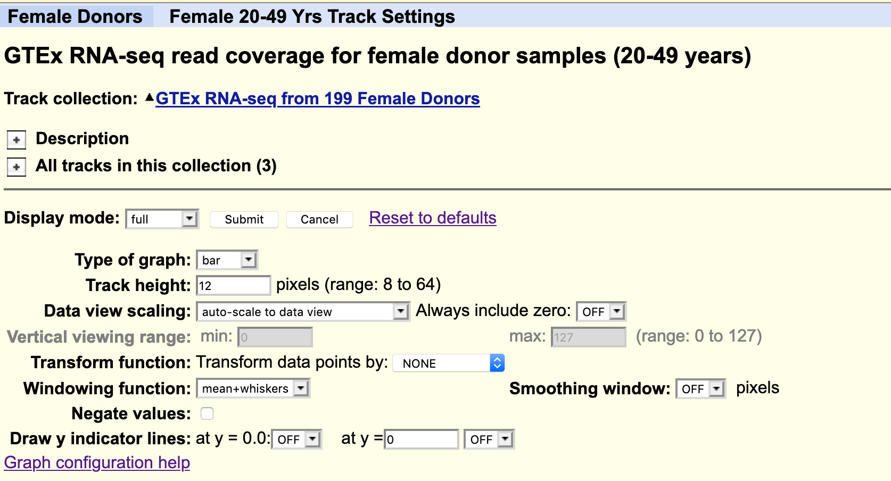
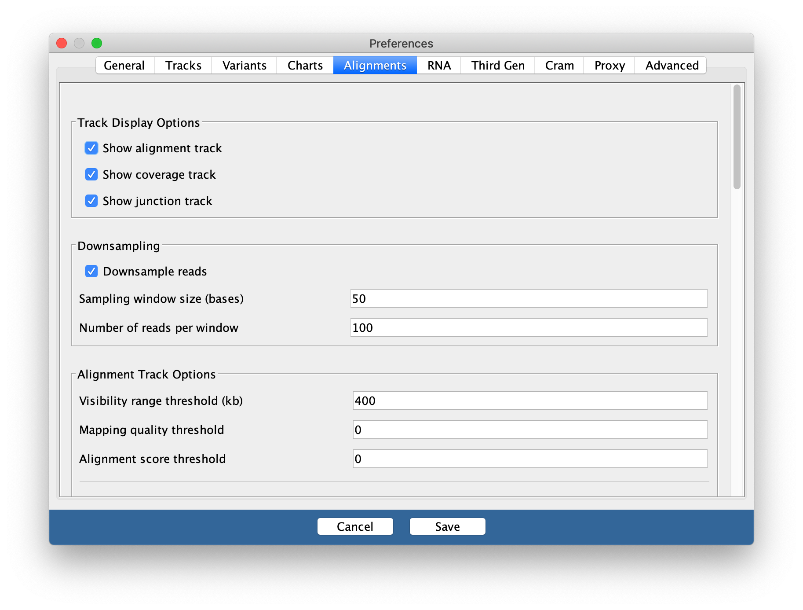

Genome browsers are invaluable for viewing and interpreting
the many different types of data that can be anchored to genomic
positions. These include variation, transcription, the many
types regulatory data such as methylation and transcription factor
binding, and disease associations. The larger genome browsers serve as
data archives for valuable public datasets facilitating
visualisation and analysis of different data types. It
is also possible to load your own data into some of the public genome
browsers.
By enabling viewing of one type of data in the context of another,
the use of Genome browsers can reveal important information about gene
regulation in both normal development and disease, and assist hypothesis
development relating to genotype phenotype relationships.
COMMONLY USED GENOME BROWSERS
All researchers are encouraged to become familiar with the use of
some of the main browsers, such as:
These browsers are designed for use by researchers without
programming experience and the developers often provide extensive
tutorials and cases studies demonstrating the myriad of ways in which
data can be loaded and interpreted to assist in develop and supporting
your research hypothesis.
Many large genomic projects also incorporate genome browsers into
their web portals to enable users to easily search and view the data.
These include:
Genome browsers rely on a common reference genome
for each species in order to map data from different sources to the
correct location. A consortium has agreed on a common numbering for each
position on the genome for each species. However, this position will
vary based on the version of the genome, as error correction and updates
can change the numbering. Therefore it is very important to know
which version of the genome your data of interest is aligned
to.
The sequence for the human reference genome was accumulated up over
many years from sequence data from many different sources and does not
represent the sequence of one single person. Instead it is a composite
of fragments of the genome from many different people. Also, unlike the
human genome which is diploid, the human reference genome is haploid.
That is there is only one copy of each chromosome. It therefore does not
reflect the variation on the population, or even the most common
variants in the human genome. Exploring variation within human
genome is very important and facilitated by genome browsers
but not covered in this workshop.
If you would like to learn more about genome build version number and
updates, please go to:
Describe the biological pathway that will be referenced throughout
this tutorial
Introduction to the data used in this workshop
This tutorial uses the a well known and important signalling pathway
in the central nervous system (CNS) to illustrate some of the genome
browser tools and utility.
BDNF and TrkB signalling
Brain Derived Neurotrophic factor (BDNF) protein is an important
neurotrophin responsible for regulating many aspects of growth and
development in different cells within the CNS. TrkB is an important
receptor that binds extracellular BDNF and propagates the intracellular
signalling response via a tyrosine kinase. This TrkB receptor protein is
encoded by the NTRK2 gene.
The NTRK2 gene expresses a number of different transcript variants in
different cell types. The most well studied of these is the full length
TrkB receptor referred to as TrkB, which is mainly expressed in neuronal
cell types. The other transcript variants all express the same exons
encoding the extracellular domain of the receptor (shown in the figure
here in green) but have truncated intracellular domains, which do not
include the tyrosine kinase domain and thus activate different
signalling pathways upon binding to BDNF. None of these truncated
protein products have been well studied, but the most highly expressed
receptor variant is known as TrkB-T1, and is known to be highly
expressed in astocytes.
Graphical representation of the BDNF and TrkB
signalling pathway
Since the transcript variants are differently expressed in different
cell types within the CNS, the NTRK2 gene is a very useful example for
exploring cell type specific transcript expression in available public
data.
Major CNS cell types
Neuron (yellow cell in the image)
Astrocyte
Oligodendrocyte
Microglia
Ependymal
Image portraying the structure of different CNS
cell types: neurons (yellow), astrocytes, microglia, oligodendrocytes
and ependymal cells
Key Points
The NTRK2 gene is a useful example for exploring cell type specific
transcript expression in public data
How do we navigate the web interface of the UCSC genome
browser?
Objectives
Become familiar with the basic features of the UCSC genome
browser
Navigating the UCSC browser
Many of the tools that we will explore can be selected via multiple
different routes within the browser interface.
Many tools can be accessed via the top toolbar on a pull down
list
Other tools can be accessed from within the browser window.
In the following instructions, text written like this is
used to indicate successive lower levels from the pull down menu when
starting with the top toolbar. For example, the notation below indicates
that you should select Genome Browser from the top tool bar and
then click on Reset all user settings.
Toolbar > Genome Browser > Reset all user settings
The UCSC genome browser is supported by a rich training resource
which has new material added regularly to the YouTube
channel.
To access training and develop your skills further, go to:
Toolbar > Help > Training
WARNING
Weekly maintenance of the UCSC browser occurs at 2-3pm Sundays
Pacific time (7-8am Mondays AEST / 8-9am Mondays AEDT). During this time
the browser may be down for a few minutes.
To ensure uninterrupted browser services for your research during
UCSC server maintenance and power outages, bookmark one of the mirror
sites that replicates the UCSC genome browser.
More information and contacts for the UCSC genome browser can be
found here.
Toolbar > Genome Browser > Reset all user settings
3. Select and open the human Genome Hg38 at the default
position
Toolbar > Genomes > HumanGRCh38
Toolbar > Genomes
Ensure that GRCh38 is selected in ‘human assembly’ and click on the
blue GO box
You should see a view of the browser similar to
the image below, opening at a position on the X chromosome of Human
genome version GRCh38 showing the gene model for the ACE2 gene. Some of
the default tracks may have been updated since this screenshot was
made.
4. Familiarise yourself with the main areas of the interface
Can you locate:
The main Toolbar
Blue bar track collections (data of similar types are collected
together under the same ‘Blue bar’ heading). Scroll down to see
additional data collections and which ones are turned on as
default.
Genome species and version number
Position box
Navigation tool buttons
Chromosome ideogram
Genome view window
Pre loaded tracks, track titles:
The grey bars on the left of the genome view can be used for
selecting and configuring the tracks.
You can change the order of the tracks by dragging these grey bars
up and down.
Turn tracks on and off:
You can hide tracks by right clicking on the grey bar or by turning
them off in the Blue bar collections.
You have to click on a ‘refresh’ button for changes to be reflected
in the genome view window.
View the configuration page for one of the tracks.
The configuration page gives you a lot of information about the data
track and its colouring. You can open the configuration page for a track
by:
clicking on the grey bar for the track or,
clicking on the track title in the Blue bar collection. More
information and options are usually available by selecting the
configuration page for a track via the track title in the Blue Bar
collections.
Select ‘resize’ button under the genome view to fit the genome view
window to your screen
5. Customise your view
Use the ‘Configure’ tool to change the font size to 12
How do we interpret gene models represented in the UCSC genome
browser?
Objectives
Use the UCSC gene browser to:
Explore features of particular chromosomal regions
Investigate specific genes as well as collections of genes
Search for locations of sequences and markers
Retrieve annotation information for specific regions or
genome-wide
Gene model representation

The typical structure of a gene as represented
in the UCSC genome browser
NTRK2
First we are going to familiarise ourselves with the gene model
representation of the different transcripts of NTRK2.
1. Navigate to the NTRK2 gene position in GRCh38 and view the gene
models.
You can navigate to a different region of the genome by typing in the
position box.
If you know the specific location you are interested in, type in the
location (e.g. chr9:84,665,760-85,030,334)
If you have a gene of interest, you can type in the gene name
(e.g. NTRK2).
Note the autocompleted suggestions that appear when you start typing.
You can select from one of the suggestions or click go and
select from a wider range of options.
2. Hide all tracks
Select the Hide all button below the genome view.
3. Turn on only the Gencode V36 Genemodels in
‘full’ viewing mode
Select from the blue bar group labelled **Genes and Gene
predictions*’.
4. Turn on the Conservation track to ‘full’
Don’t forget to click refresh
5. Zoom out and scroll across the whole gene
When you have navigated to the NTRK2 gene, zoom out until you can
view all of the 5’ UTRs and 3’ UTRs for all transcript variants for this
gene. Then drag the view left and right to center (like in Google maps)
or drag and select the region to center the gene in the Genome
view.
You should now see something like this
CHALLENGE 1
Which strand is the gene encoded on / transcribed from? (+ or -
strand)
CHALLENGE 2
Identify the exons, introns and UTRs.
Do regions of conservation only occur were there are coding
regions?
CHALLENGE 3
How many different transcripts variants are there for this gene?
How do they differ?
Select a coding region (full height boxes) towards the 3’UTR of the
gene.
CHALLENGE 4
Zoom in to the region until you can see the letters of the amino acid
sequence.
Why are some amino acid boxes red or green?
CHALLENGE 5
Zoom in again until you can see each amino acid number.
Why do different transcripts have different amino acid numbers?
NOTE
Note that one of the transcript names is in white text with a black
background: this is the transcript you selected from the autocompleted
list or the search results.
6. Change the view settings for the track
Right click on the track grey bar in the left of the genome window to
access view settings.
Switch between dense , squish ,
pack , and full to see how it changes the
representation of the models.
7. Reveal the Ensembl ID for each transcript
Go to the configuration page for the GENCODE V36
track and change check the box to also reveal the Ensembl
ID in the label.
The transcript names are now too long to fit on the screen. You can
use the configuration page (like you did to chane the font size at the
beginning of the workshop) and change the number of characters in the
label so that you can see the entire transcript label.
Check your understanding
Question 1
Which transcript encodes the shortest amino acid sequence?
ENST00000352327.5
This transcript does not include one of the large coding regions and
the coding region in the terminal exon is also slightly shorter.
Question 2
Which transcript has the longest 3’UTR?
ENST00000396976.6
Although the last two exons of ENST00000396972.2 are UTR rather than
coding sequence, it is still not as long as the 3’UTR of
ENST00000396976.6
Question 3
Which transcripts appear to encode the same protein product?
ENST00000420986.6, ENST00000280352.13 and
ENST00000393047.8
Notice the height of the boxes for the first three exons:
ENST00000532163.5 appears to encode a different CDS from the other
transcripts.
Question 4
Which transcript has the longest 5’UTR?
ENST00000532681.5
This transcript is encoded on the reverse strand.
Question 5
Which transcript has the longest CDS?
ENST00000253801.7
This transcript is encoded on the forward strand.
Question 6
Which transcript has the longest 5’UTR?
ENST00000589334.5
This transcript is encoded on the reverse strand.
BDNF
Now we will look at the gene model for BDNF in the same genome. There
are some differences that enable us to demonstrate some more tools.
1. Navigate to the BDNF gene position in GRCh38
Note that there are blue transcript models encoded on the - strand
and green BDNS-AS transcript models on the + strand. BDNF-AS is the
antisense gene.
Colouring information is specific for each track and can be obtained
from the configuration page. Below is the colouring legend for the
GENCODE V36 track.
2. Flip the orientation of the gene
Since the convention is to display genes in the 5’ to 3’ orientation,
it can be useful for our own interpretation, and also for presentation
purposes, to flip the orientation of a gene when viewing it in a Genome
Browser.
To flip the orientation of the gene, use the reverse
button under the genome view window.
3. Apply the Multi-Region view from the main tool bar view
options
When a gene has many large introns taking up a lot of white space in
an image, it can be difficult to see if exons in different transcript
models or other data tracks align. The Multi-Region
view tool can be used to fold the intronic regions out of the view like
a concertina. The Broswer selects which region to fold out based on the
gene model track(s) that you have turned on at the time.
Toolbar > View > Multi-Region > select
Show exons using GENCODE V36
It is now a lot easier to view a number of
interesting features in the BDNF transcript models
Notice:
The transcript variants for the BDNF vary mostly in the genomic
position of the 5’UTR.
The noncoding AS-BDNF gene transcript includes a region that would
be antisense to the coding BDNF transcript.
You may find that using the multi-region tool facilitates
visualisation and interpretation of gene expression data later in the
workshop.
Key Points
The UCSC genome browser graphically represents key elements of gene
transcripts, including exons, introns, and untranslated regions
Different settings and tools can be used to configure the browser to
more easily investigate specific features of a gene
Use the UCSC BLAT tool to compare the similarity of a short probe
sequence to the human genome and identify the genomic transcript each
probe is most likely to detect.
The BLAT tool
The BLAT tool
is a sequence similarity tool similar to BLAST. It can quickly identify
region(s) of homology between a genome and a sequence of interest. Due
to the presence of orthologs and paralogs, a target sequence may have
similarity to more than one region in the genome.
A note on microarray expression data
Microarray expression data is not commonly used now, but some of the
data generated from large, well-orchestrated studies still provide
valuable information to researchers. Microarray probes, like in
situ hybridisation probes, target a small region of the RNA and do
not measure the whole RNA transcript. If you are measuring gene
expression, it is important to know exactly which region of the gene you
are detecting.
Exercise
In this exercise, we will employ the BLAT tool to map the sequences
of two different expression probes to their target regions and determine
which NTRK2 gene transcripts the probes are likely to detect.
The study was the Human Brain
gene expression atlas generated by the Allen Institute. Below are
sequences of two hybridisation probes that were use in a microarray used
to detect expression of the gene NTRK2. These two probes result in very
different hybridisation and expression patterns across different regions
of the brain. As we observed in the previous exercise, NTRK2 has a
number of different transcript variants.
Our question: are these probes are detecting different or
multiple transcripts of NTRK2, and if yes, which ones?
The probes
The images below are of one of the six donors included in the atlas,
and typical of the expression pattern for NTRK2. These images are taken
from the NTRK2 gene
page of Human Brain Atlas.
Most obvious in the images is the high level of expression signal
using Probe A_23_P216779 and low level for A_24_P343559 in the corpus
callosum (CC), which is a region of white matter in the brain with
relatively few neurons and relatively high proportion of myelinating
oligodendrocytes. This expression profile is reversed in the the
cortical regions, eg. frontal lobe (FL) and parietal lobe (PL), which
have a relatively high density of neuronal cells.
Z score of expression level in Human brain (blue
= low expression, red = high expression)
Your task
1. Use the BLAT tool to find region of homology
Select Toolbar > tools > blat
Copy the sequence of the first probe above and paste into the
search box
Select the human GRCh38 for ‘Assembly’ and click
Submit
Probe A_23_P216779 returns 2 hits for different chromosomes. One of
these has 100% homology over the whole 60 base sequence, the other has
87% homology over a 24 base region.
Copy and paste the probe name to use as the label for the
Custom track name and Custom track
description and click on
Build a custom track with these results . It is not
necessary to build a custom track - you could simply click on the
browser link to view the results, but creating a ‘custom
track’ from the BLAT result enables you to give it a unique name. This
is important if you are doing multiple BLAT searches as you wont be able
to tell which one is which.
Select browser option for the hit with the highest
homology to view the result. Observe which region of the NTRK2 gene this
probe will target. Zoom out for context.
Note that a new Blue bar heading has appeared
for your custom tracks.
Repeat for the other probe sequence.
2. Use the ‘highlight’ tool to keep track of region of interest in
the Genome view.
It is easy to lose track of a region you are investigating when
navigating around the genome in a browser. We are going to highlight
each region of probe homology within the NTRK2 gene, using a different
colour for each probe. Highlight is also useful if you have lots of
different tracks loaded and you want to check that a feature on one
track lines up with another.
Using your mouse, select in the position track at the top to
activate Drag-and-select. Select only the region of
homology for each probe within the NTRK2 gene and use a different
highlight for each region.
Zoom out to view the whole gene again.
Challenge
Do the probes detect coding regions of the NTRK2 gene?
Challenge
Are the probes likely to detect different transcripts?
3. Use ‘Multiregion view’ to make it easier to compare coding
regions of different transcripts
Toolbar > View > Multi-Region select
Show exons using GENCODE V36
We have created a ‘public session’ of the BLAT NTRK2 exercise. You
can view this from the link in the sessions.
Toolbar > My data > Public session >
search for hg38_NTRK2_blat_probes
Key Points
We can use the UCSC BLAT tool to
identify region(s) of sequence similarity between a genome and a
sequence of interest.
How can we explore gene expression data in the UCSC genome
browser?
Objectives
Use the UCSC gene browser to:
Interpret gene expression data from multiple sources
Compare a region of one genome to genomes of other species
GTEX data
Human tissue specific expression data from the GTEX project is available in the
UCSC genome browser.
Gene level expression data from GTEx V6 (570) donors, and GTEx V8
(948) donors can be turned on from Blue bar title for more detailed
configuration page. These are displayed as coloured bar plots.
Transcript level data is also available for GTEx V6, this is also
displayed as bar plots.
Transcript level expression data for GTEx V6 is available as
coverage plots and is accessed from the Track hubs.
Under the genome view window, click on the track hubs,
or access from the Toolbar under My data
Scroll down and select GTEx RNA-seq Signal Hub. This
can be viewed in either hg19 or hg38 so can be compared with a wide
variety of other datasets.

Default settings:
All the available data from one individual only is loaded. Data
from other subjects in the study can be loaded as desired. For example,
you could load all available samples for one tissue region
only.
The data is autoscale to data view with a track height
or 12 pixels for each samples. You can change the height of the track or
add a data transformation.
The default points plot can be converted into a density plot by
clicking on the track title.

Your task
Using the selection matrix for female donors aged 2-49 years,
deselect the default samples and select only Brain cortex and Pancreas
samples.
Navigate to the location for the gene MYRF. You can increase the
height of the datatrack to improve visualisation.
CHALLENGE 1
Can you locate an exon in the MYRF gene that is present in
transcripts expressed in the brain but not in the pancreas?
CHALLENGE 2
Does this alternative splicing event result in a frame shift of the
coding sequence?
CHALLENGE 3
How many amino acids are there in the protein products for each MYRF
transcript?
FACS data
The FACS derived data from the Tabular Muris cell type
data can be visualised as a coverage plot
Your task
Start at the view of the NTRK2 gene in the human genome and navigate
to the Ntrk2 gene in the mouse genome using the View in other
genomes tool.
Toolbar > View > In Other Genomes
(Convert)
Select New Genome:Mouse,
New Assembly:GRC38/mm10, click on
Submit
Select the region with the greatest homology
Click on the bar chart icon for the Tabular muris data in the
default view to see a summary bar chart of the cell type data.
To see a coverage plot of the expression data, we have to
configure the Tabular Muris track by selecting it from the blue bar
collection.
Hide Cell expression
Select Genome coverage to full
Select submit
This can look a bit overwhelming as there are many tracks and the
default track height is set very high. But it is easy to
simplify it by focusing on a few cell types of interest.
Right click on the grey bar to configure the track set
Change Track height to 30
for Data view scaling select
group auto-scale
clear all the subtracks and then manually select only these few cell
types of interest:
astrocyte Cv
Bergmann glial Cv
microglia Cv
neuron Cv
oligodendrocyte Cv
OPC Cv
CHALLENGE 4
Which cell type has the highest level expression of Ntrk2 in this
dataset?
Change the Data view scaling from autoscale to
dataview.
Export a PDF image of the genome view:
Toolbar > View > PDF/PS select
Download the current browser graphic in PDF
CHALLENGE 5
Which cell type(s) express the long and short transcripts of
Ntrk2?
Linnarsson lab data
Mouse CNS cell type expression data can also be validated using an
independent single cell dataset of mouse cortex from the Linnarsson lab.
The data that is publicly available for viewing in the UCCS genome
browser is not housed in the UCSC genome browser. You must first access
it from the the Linnarsson lab data page.
This RNAseq data is stranded, meaning you can see if the transcript
data is from the + or - strand.
Your task
Click here for the
Linnarsson lab public data page for this dataset where you can search
for cell expression profiles for individual genes.
Click on the Browse the genome blue text near the
bottom of the page.
This loads 18 different tracks, one for each cell type investigated.
The default setting for expression range is quite high and most gene
expression is not observed with these settings. Each track must be
configured individually rather than as a group, which takes a lot of
time.
We have created a version of this data as a public session in the
UCSC genome browser, where each track is autoscaled which can make it
quicker to determine which expression range would be ideal for
visualising the expression of an individual gene. The data is also
viewed using ‘Multi-Region’ which hides the introns in the gene models.
The session is illustrated in the screen shot below and you can access
this custom track set by clicking on the title in blue text. It is also
a publicly shared session called mm10 Linnarsson Celltype
autoscale which you can access from the database of public
sessions.
Understand the type of data that can be visualised in IGV
IGV
In this section we will download a BAM file of gene expression data
from SRA, and view it in the Integrated Genome Viewer
(IGV). BAM files must first be sorted and indexed before they
can be loaded into genome viewers. IGV has tools to do this without
having to use the command line.
Exercise
The data
The expression data we are using for this exercise is from the mouse
Celltax single cell
expression atlas published by the Allen Brain Institute. The cell
tax vignette has an expression browser that displays gene level
expression as a heat map for any gene of interest. The readsets (fastq
files) and aligned data (BAM files) for 1809 runs on single cells are
also available for download from SRA.
The SRA study ID for this study is SRP061902 and
individual runs from this study are easily selected by viewing the
samples in the ‘RunSelector’.
For this exercise, we will download a few samples in order to
illustrate navigating in IGV by looking at the expression of NTRK2 in
the same cell types we have discussed in earlier exercises. For each
cell type, we will down load a .BAM file containing only the reads from
the chromosome of interest.
Click on the ‘Alignment’ tab. Note that the data is aligned to
the mouse GRCm38 genome (mm10).
Select the chromosome of interest. For NTRK2 in mouse it is
chr13
For ‘Output this run in:’ select BAM and click
on ‘format to:’ File
Rename the downloaded file to include the cell type, to avoid
confusion, e.g. SRR2138661_astrocyte_chr13.bam
2. Use IGV tools to SORT and INDEX the BAM files
Open IGV and select Tools > Run igvtools from
the pull down menus
Select Sort from the Command options and use the
browse options to select the BAM file you just downloaded. Click
Run
Without closing the igvtools window, now select the command
Index and browse to find the BAM file you just sorted. It
will have the same file name with ‘sorted’ added to the end,
e.g. SRR2138661_astrocyte_chr13.sorted.bam
The resulting index file will have the file name
SRR2138661_astrocyte_chr13.sorted.bam.bai
IMPORTANT
It is essential that the index file for a BAM file has the
same name and is located in the same
folder as its BAM file. If not, the IVG software will not be
able to open the BAM file.
3. View the BAM files in IGV
Select the Mouse (mm10) genome from the genome box in the top
right hand corner.
Select File > Load from File and select all
four _chr13.sorted.bam files only
Select open - but don’t expect to see any data yet.
The genome view window opens on a whole chromosome view as default but
it wont show any data until the view region is small enough to show all
data in the current view.
Type the gene name ‘NTRK2’ into the search window.
Expand the Refseq gene model track by right clicking it to see
all the splice variants
The gene and thus the genome view is 328kb and the default
setting for viewing data is only 100kb. Unless you have already changed
your settings, alignment data will not get be showing. Zoom into the
region of a coding exon by selecting in the numbered location track at
the top of the genome view.
To see the whole gene in the genome window at the same time you may
need to change the preferences.
Go to View > Preferences and select the
Alignments tab. Change the visibility range threshold to
400kb.

You may need to change this back to a smaller
range in the future if you are working with large datasets and/or small
amounts of memory on your computer
4. Export images
The Genome view above can be exported by selecting
File > Save image from the tool bar
To export the Sashimi plot below:
Right click on one of the junction tracks and select
Sashimi Plot from the pull down menu.
Select the tracks you want in your final image.
There are some data filtering and style adjustments you can make to
the Sashimi plot. Right click on each track to access the menu options.
Some changes apply to each track individually and some to all
tracks.
5. Download and install the Gencode gene model annotation track
The refseq gene model track is not as comprehensive as GenCode gene
models. For both Human and Mouse the Gencode gene model gtf annotation
files can be downloaded from Gencode. If you wish to
do this be aware that it takes a little time and is not done as part of
a workshop.
Create a folder called ‘annotations/Mouse’ in the main ‘igv’
folder that was installed on your computer when you downloaded
IGV.
Download the GTF file from the link above and save it in this
folder.
Unpack and then sort and index
the .gtf file using igvtools.
In IGV, before you load you data files, load this annotation file
and it will replace the refseq one.
If you would like to learn more about how to use IGV, please go
to: